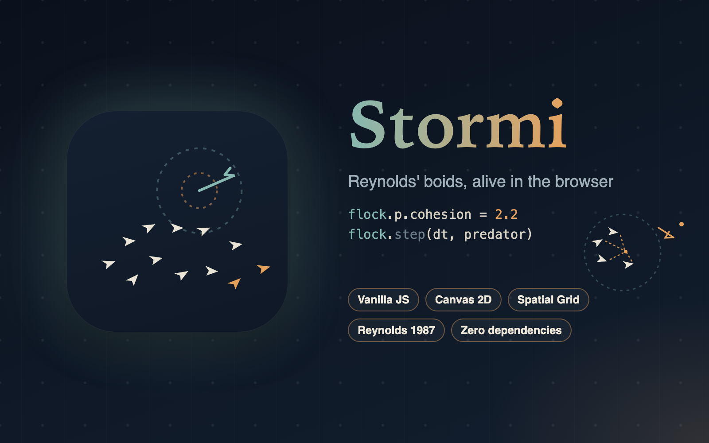
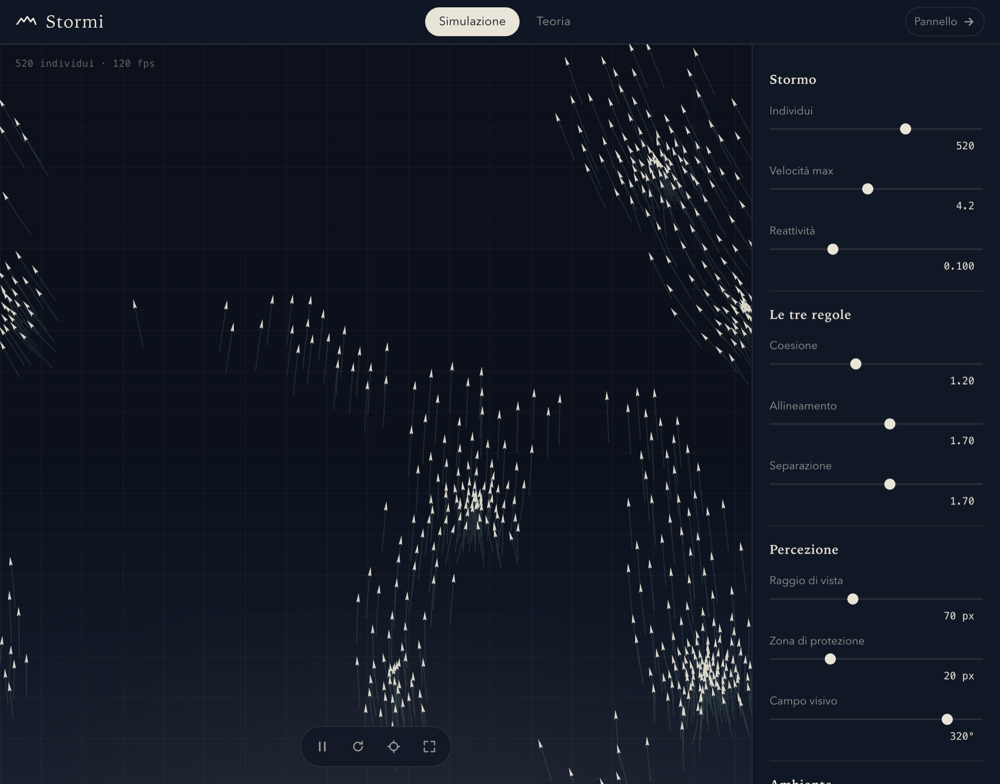
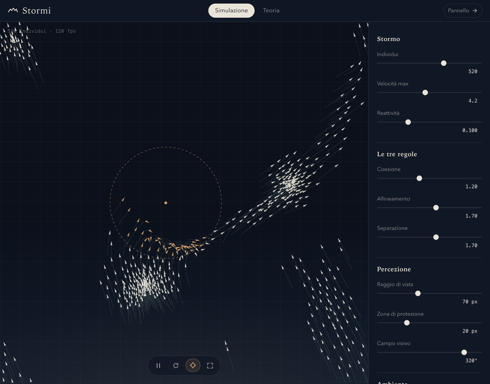

An interactive Reynolds boids lab: tune the flock live, summon a predator, slow time down and watch collective behaviour emerge.
Stormi is an interactive playground for Craig Reynolds' Boids algorithm (SIGGRAPH 1987), the classic model in which a flock emerges from three simple local rules — separation, alignment and cohesion — with no leader and no choreography. Every knob of the model is exposed and adjustable while the flock is in flight.
One side of the screen is an open sky where hundreds of birds move; the other is a control panel of nine live sliders: number of individuals, top speed, agility, the weights of the three rules, perception radius, protection zone and field of view with a real rear blind spot. A predator that follows the mouse scatters the flock, fading trails and a slow-motion mode let you read trajectories that are too fast to follow at full speed, and a diagnostics overlay reveals exactly what each bird can see.
A companion theory view explains where the model comes from and what every parameter does — with diagrams of the three rules, the steering formulation, pseudocode and a parameter-by-parameter guide — so Stormi works as a teaching tool as much as a toy. Settings survive reloads, and the whole app is dependency-free vanilla JavaScript you can open with a double click.
The interface is built around a deep "observatory night" palette: an almost-black sky, ivory birds, sunset amber for anything urgent and instrument teal for measurement — a quiet stage that keeps the flock itself the centre of attention.
Every slider takes effect immediately on the flying flock, so cause and effect are always visible: raise cohesion and the birds pack into dense spheres, drop alignment and coordinated waves collapse into a squirming crowd, shrink the field of view and predators start sneaking up from the blind spot behind each bird's head. Five tuned presets — Harmonious, Starling, Nervous, Vortex and Formation — jump straight to distinct personalities of the same model.


Activate the predator and your cursor becomes a threat with a pulsing danger ring: birds inside it flee with a force that grows as you close in, and those in panic glow amber so the wave of alarm spreading through the flock is easy to follow. It is the same steering mechanism Reynolds used for crowd animations, and the reason real starling murmurations form those famous dark ribbons when a falcon strikes.
On every tick the flock is bucketed into a spatial grid whose cells match the perception radius, so neighbour searches only inspect the cells around each bird — effectively linear time even with hundreds of individuals, where a naïve all-pairs search would be quadratic. Accelerations are computed simultaneously from the previous state, as in the original model, and then integrated with speed clamps that keep every bird gliding: never frozen, never faster than the frame allows.
The simulation advances on fixed-timestep ticks with a spiral guard, which is what keeps slow motion and high-refresh displays equally smooth. Rendering is a single canvas pass per frame — trails first, the whole flock as one batched path, then the diagnostic overlays and the predator ring — on a resolution-aware surface. Everything is dependency-free vanilla JavaScript split into engine, renderer, interface and bootstrap, and the app also exposes its live simulation state to the browser console for experimenting.
Everything below is the model exactly as js/boids.js runs it. Each boid i is a point with position pi and velocity vi; every tick it reads its neighbours, turns three "desires" into capped steering forces, and integrates. Symbols first, then the rules.
A boid knows nothing about the flock as a whole — it reacts only to the neighbours j it can actually see: close enough, and inside the cone in front of its head:
Δij = pj ⊟ pi is the toroidal minimum-image difference: on each axis, when the raw gap exceeds half the screen the neighbour is closer "the other way round" and the screen size is subtracted — so flocks straddling opposite edges still see each other. With fov = 360° the visibility test is always true and no boid has a blind spot.
Over that neighbourhood the model computes three vectors — Reynolds' three rules — each later turned into a force:
1 · Separation — avoid the crush. Each boid watches the neighbours inside its protection zone and steers away from them. It is the most urgent rule — it answers an imminent collision — which is why it carries the largest default weight.
2 · Alignment — fly like your neighbours. Each boid averages the velocities of the companions it sees and gradually bends toward that heading. This is the rule that carries information: a turn born at one edge of the flock propagates through it like a wave.
3 · Cohesion — do not stay alone. Each boid computes the centroid — the mean position of its neighbours — and is gently drawn toward it. This is the force that holds the flock together and keeps it from fraying.
Reynolds never applies the raw desires. Each becomes a steering force: the desired velocity — the desire rescaled to top speed — minus the current velocity, capped tick by tick:
The cap is the quiet secret of the realism: no bird can turn on itself in a single frame. fmax is exactly the agility slider in the panel — low values give wide, majestic curves; high values, twitchy reactions.
The whole engine in plain vanilla code: the three steering rules, the spatial grid, the predator's flee force, presets, keyboard shortcuts and settings persistence — no framework, no build step.
Rendering at any pixel density: the flock drawn as batched paths, fading trails, the diagnostic radii and velocity vectors, and the pulsing predator ring.
App shell with two views — simulation and theory — and declarative controls: each slider declares which parameter it drives, keeping the interface and the model in sync without glue code.
The "observatory night" design system: a custom-property palette, serif/sans/mono typography trio, a collapsible instrument panel and responsive layout.